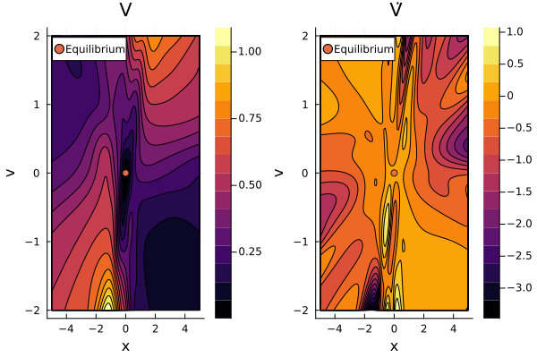

Damped Simple Harmonic Oscillator
Let's train a neural network to prove the exponential stability of the damped simple harmonic oscillator (SHO).
The damped SHO is represented by the system of differential equations
\[\begin{align*} \frac{dx}{dt} &= v \\ \frac{dv}{dt} &= -2 \zeta \omega_0 v - \omega_0^2 x \end{align*}\]
where $x$ is the position, $v$ is the velocity, $t$ is time, and $\zeta, \omega_0$ are parameters.
We'll consider just the box domain $x \in [-5, 5], v \in [-2, 2]$.
Copy-Pastable Code
using NeuralPDE, Lux, NeuralLyapunov, SciMLBase
using ModelingToolkitBase: @named
import Optimization, OptimizationOptimisers
using StableRNGs, Random
rng = StableRNG(0)
Random.seed!(200)
######################### Define dynamics and domain ##########################
"Simple Harmonic Oscillator Dynamics"
function f(state, p, t)
ζ, ω_0 = p
pos = state[1]
vel = state[2]
return [vel, -2ζ * ω_0 * vel - ω_0^2 * pos]
end
lb = Float32[-5.0, -2.0];
ub = Float32[ 5.0, 2.0];
p = Float32[0.5, 1.0];
fixed_point = Float32[0.0, 0.0];
dynamics = ODEFunction(f; sys = SciMLBase.SymbolCache([:x, :v], [:ζ, :ω_0]))
####################### Specify neural Lyapunov problem #######################
# Define neural network discretization
dim_state = length(lb)
dim_hidden = 10
dim_output = 4
chain = [Chain(
Dense(dim_state, dim_hidden, tanh),
Dense(dim_hidden, dim_hidden, tanh),
Dense(dim_hidden, 1)
) for _ in 1:dim_output]
ps, st = Lux.setup(rng, chain)
# Define training strategy
strategy = QuasiRandomTraining(1000)
discretization = PhysicsInformedNN(chain, strategy; init_params = ps, init_states = st)
# Define neural Lyapunov structure and corresponding minimization condition
structure = NonnegativeStructure(dim_output; δ = 1.0f-6)
minimization_condition = DontCheckNonnegativity(check_fixed_point = true)
# Define Lyapunov decrease condition
# Damped SHO has exponential stability at a rate of k = ζ * ω_0, so we train to certify that
decrease_condition = ExponentialStability(prod(p))
# Construct neural Lyapunov specification
spec = NeuralLyapunovSpecification(structure, minimization_condition, decrease_condition)
############################# Construct PDESystem #############################
@named pde_system = NeuralLyapunovPDESystem(dynamics, lb, ub, spec; p)
######################## Construct OptimizationProblem ########################
prob = discretize(pde_system, discretization)
########################## Solve OptimizationProblem ##########################
res = Optimization.solve(prob, OptimizationOptimisers.Adam(); maxiters = 500)
###################### Get numerical numerical functions ######################
net = discretization.phi
θ = res.u.depvar
V, V̇ = get_numerical_lyapunov_function(net, θ, structure, f, fixed_point; p)Detailed description
In this example, we set the dynamics up as an ODEFunction and use a SciMLBase.SymbolCache to tell the ultimate PDESystem what to call our state and parameter variables.
using SciMLBase # for ODEFunction and SciMLBase.SymbolCache
"Simple Harmonic Oscillator Dynamics"
function f(state, p, t)
ζ, ω_0 = p
pos = state[1]
vel = state[2]
return [vel, -2ζ * ω_0 * vel - ω_0^2 * pos]
end
lb = Float32[-5.0, -2.0];
ub = Float32[ 5.0, 2.0];
p = Float32[0.5, 1.0];
fixed_point = Float32[0.0, 0.0];
dynamics = ODEFunction(f; sys = SciMLBase.SymbolCache([:x, :v], [:ζ, :ω_0]))Setting up the neural network using Lux and NeuralPDE training strategy is no different from any other physics-informed neural network problem. For more on that aspect, see the NeuralPDE documentation.
using Lux, StableRNGs
# Stable random number generator for doc stability
rng = StableRNG(0)
# Define neural network discretization
dim_state = length(lb)
dim_hidden = 10
dim_output = 3
chain = [Chain(
Dense(dim_state, dim_hidden, tanh),
Dense(dim_hidden, dim_hidden, tanh),
Dense(dim_hidden, 1)
) for _ in 1:dim_output]
ps, st = Lux.setup(rng, chain)Since Lux.setup defaults to Float32 parameters for Dense layers, we set up the bounds and parameters using Float32 as well. To use Float64 parameters instead, add the following lines:
using ComponentArrays
ps = ps |> ComponentArray |> f64
st = st |> f64To train the model, we'll sample 1000 points from the domain using NeuralPDE.QuasiRandomTraining. See the NeuralPDE.jl docs for more on how the PDESystem will be converted into an OptimizationProblem.
using NeuralPDE
# Define training strategy
strategy = QuasiRandomTraining(1000)
discretization = PhysicsInformedNN(chain, strategy; init_params = ps, init_states = st)We now define our Lyapunov candidate structure along with the form of the Lyapunov conditions we'll be using.
For this example, let's use a Lyapunov candidate
\[V(x) = \lVert \phi(x) \rVert^2 + \delta \log \left( 1 + \lVert x \rVert^2 \right).\]
using NeuralLyapunov
# Define neural Lyapunov structure and corresponding minimization condition
structure = NonnegativeStructure(dim_output; δ = 1.0f-6)NeuralLyapunovStructure
Network dimension: 3
V(x) = ||φ(x)||² + 1.0e-6log(1 + (x - x_0)²)
V̇(x) = 2(φ(x))⋅(ẋ*Jφ(x)) + (2.0e-6ẋ*(x - x_0)) / (1 + (x - x_0)²)
This structure enforces nonnegativity, but doesn't guarantee $V([0, 0]) = 0$. We therefore don't need a term in the loss function enforcing $V(x) > 0 \, \forall x \ne 0$, but we do need something enforcing $V([0, 0]) = 0$. So, we use DontCheckNonnegativity(check_fixed_point = true).
minimization_condition = DontCheckNonnegativity(check_fixed_point = true)LyapunovMinimizationCondition
Does not train for nonnegativity of V(x)
Trains for V(x_0) = 0To train for exponential stability we use ExponentialStability, but we must specify the rate of exponential decrease, which we know in this case to be $\zeta \omega_0$.
# Define Lyapunov decrease condition
# Damped SHO has exponential stability at a rate of k = ζ * ω_0, so we train to certify that
decrease_condition = ExponentialStability(prod(p))LyapunovDecreaseCondition
Trains for 0.5V(x) + V̇(x) ≤ 0
with approximation a ≤ 0 => max(0, a) ≈ 0We package these in a NeuralLyapunovSpecification and use it to construct a PDESystem.
# Construct neural Lyapunov specification
spec = NeuralLyapunovSpecification(structure, minimization_condition, decrease_condition)NeuralLyapunovSpecification
Structure:
NeuralLyapunovStructure
Network dimension: 3
V(x) = ||φ(x)||² + 1.0e-6log(1 + (x - x_0)²)
V̇(x) = 2(φ(x))⋅(ẋ*Jφ(x)) + (2.0e-6ẋ*(x - x_0)) / (1 + (x - x_0)²)
Minimization Condition:
LyapunovMinimizationCondition
Does not train for nonnegativity of V(x)
Trains for V(x_0) = 0
Decrease Condition:
LyapunovDecreaseCondition
Trains for 0.5V(x) + V̇(x) ≤ 0
with approximation a ≤ 0 => max(0, a) ≈ 0using ModelingToolkitBase: @named # for the `@named` macro
# Construct PDESystem
@named pde_system = NeuralLyapunovPDESystem(dynamics, lb, ub, spec; p)PDESystem
Equations: Symbolics.Equation[max(0, (2.0e-6v*x) / (1 + v^2 + x^2) + (2.0e-6v*(-2v*ζ*ω_0 - x*(ω_0^2))) / (1 + v^2 + x^2) + 0.5(1.0e-6log(1 + v^2 + x^2) + φ1(x, v)^2 + φ2(x, v)^2 + φ3(x, v)^2) + 2((Differential(x, 1)(φ1(x, v))*φ1(x, v) + Differential(x, 1)(φ2(x, v))*φ2(x, v) + Differential(x, 1)(φ3(x, v))*φ3(x, v))*v + (Differential(v, 1)(φ1(x, v))*φ1(x, v) + Differential(v, 1)(φ2(x, v))*φ2(x, v) + Differential(v, 1)(φ3(x, v))*φ3(x, v))*(-2v*ζ*ω_0 - x*(ω_0^2)))) ~ 0]
Boundary Conditions: Symbolics.Equation[φ1(0.0, 0.0)^2 + φ2(0.0, 0.0)^2 + φ3(0.0, 0.0)^2 ~ 0]
Domain: Symbolics.VarDomainPairing[Symbolics.VarDomainPairing(x, -5.0 .. 5.0), Symbolics.VarDomainPairing(v, -2.0 .. 2.0)]
Dependent Variables: Symbolics.Num[φ1(x, v), φ2(x, v), φ3(x, v)]
Independent Variables: Symbolics.Num[x, v]
Parameters: Symbolics.Num[ζ, ω_0]
Default Parameter ValuesModelingToolkitBase.AtomicArrayDict{SymbolicUtils.BasicSymbolicImpl.var"typeof(BasicSymbolicImpl)"{SymbolicUtils.SymReal}, Dict{SymbolicUtils.BasicSymbolicImpl.var"typeof(BasicSymbolicImpl)"{SymbolicUtils.SymReal}, SymbolicUtils.BasicSymbolicImpl.var"typeof(BasicSymbolicImpl)"{SymbolicUtils.SymReal}}}(ω_0 => 1.0, ζ => 0.5)Now, we solve the PDESystem using NeuralPDE the same way we would any PINN problem.
prob = discretize(pde_system, discretization)
import Optimization, OptimizationOptimisers
res = Optimization.solve(prob, OptimizationOptimisers.Adam(); maxiters = 500)
net = discretization.phi
θ = res.u.depvarComponentVector{Float32,SubArray...}(φ1 = (layer_1 = (weight = Float32[-0.36964664 -0.43424714; -0.07718149 -1.9222336; … ; -1.7360705 -1.0197908; 0.1433641 -0.111034], bias = Float32[0.10492512, 0.1487451, 0.37257227, 0.38962734, -0.14133617, 0.21345074, 0.1259482, 0.34757793, -0.19850947, 0.46344936]), layer_2 = (weight = Float32[-0.6851839 -0.26190254 … -0.7838215 -0.051145222; 0.13710427 0.21749143 … 0.2784313 0.12728353; … ; 0.3007926 0.60468954 … -0.78148973 -0.021062996; -0.8203565 0.7975966 … 0.48475838 -0.51472557], bias = Float32[0.066425025, -0.11892218, 0.1825717, 0.20604694, -0.14737682, -0.1463609, 0.18864585, -0.072635956, -0.18110049, 0.2549416]), layer_3 = (weight = Float32[-0.3884507 0.41386625 … 0.2619962 -0.10196325], bias = Float32[0.16661303])), φ2 = (layer_1 = (weight = Float32[-0.9614186 -0.2771435; -0.34872144 1.5207494; … ; 0.195441 -0.98859334; 1.2683874 -0.72317356], bias = Float32[0.5794021, -0.13615671, 0.25869796, -0.2830728, 0.03256052, -0.5293719, -0.021993361, -0.11538128, -0.47348836, -0.24319251]), layer_2 = (weight = Float32[0.09456949 0.66430146 … -0.517515 0.05164179; -0.12692061 -0.16360925 … -0.6081254 0.33829668; … ; 0.21304345 -0.6452587 … -0.7924159 -0.39348423; -0.30731034 0.8062847 … -0.57072777 0.4631275], bias = Float32[0.09807783, 0.19283083, 0.09806015, 0.15022181, 0.2844391, 0.06216007, 0.27677795, -0.0069332435, 0.06921791, -0.3472276]), layer_3 = (weight = Float32[-0.4345166 0.3379681 … 0.37461793 0.3942771], bias = Float32[0.03640351])), φ3 = (layer_1 = (weight = Float32[1.3091558 -0.38163406; 0.4057863 -1.129698; … ; -1.2711794 -1.1512419; 1.7719543 0.26410252], bias = Float32[-0.031816963, 0.34022322, 0.63751715, 0.28523305, -0.536113, 0.6045243, -0.14816682, 0.34108955, -0.36756033, 0.18796645]), layer_2 = (weight = Float32[-0.74964905 0.072609015 … 0.013895632 -0.26137942; -0.4933955 -0.2010336 … 0.69307107 0.7613444; … ; 0.0009493298 -0.2569185 … 0.3766702 0.49315813; 0.36513105 -0.41595706 … 0.560574 -0.24325782], bias = Float32[-0.27540684, 0.08227061, 0.06843926, 0.15457831, 0.028954435, -0.05052496, -0.25809115, 0.26220408, 0.028131232, -0.19979109]), layer_3 = (weight = Float32[-0.4517377 -0.398736 … 0.20686395 -0.57423913], bias = Float32[-0.2146086])))We can use the result of the optimization problem to build the Lyapunov candidate as a Julia function.
V, V̇ = get_numerical_lyapunov_function(net, θ, structure, f, fixed_point; p)Now let's see how we did. We'll evaluate both $V$ and $\dot{V}$ on a $101 \times 101$ grid:
Δx = (ub[1] - lb[1]) / 100
Δv = (ub[2] - lb[2]) / 100
xs = lb[1]:Δx:ub[1]
vs = lb[2]:Δv:ub[2]
states = Iterators.map(collect, Iterators.product(xs, vs))
V_samples = vec(V(reduce(hcat, states)))
V̇_samples = vec(V̇(reduce(hcat, states)))
# Print statistics
V_min, i_min = findmin(V_samples)
state_min = collect(states)[i_min]
V_min, state_min = if V(fixed_point) ≤ V_min
V(fixed_point), fixed_point
else
V_min, state_min
end
println("V(0.,0.) = ", V(fixed_point))
println("V ∋ [", V_min, ", ", maximum(V_samples), "]")
println("Minimal sample of V is at ", state_min)
println(
"V̇ ∋ [",
minimum(V̇_samples),
", ",
max(V̇(fixed_point), maximum(V̇_samples)),
"]",
)V(0.,0.) = 0.006575812
V ∋ [0.0015007014, 1.0911815]
Minimal sample of V is at Float32[0.0, -0.08]
V̇ ∋ [-3.472833, 1.07139]At least at these validation samples, the conditions that $\dot{V}$ be negative semi-definite and $V$ be minimized at the origin are nearly satisfied.
using Plots
p1 = plot(xs, vs, V_samples, linetype = :contourf, title = "V", xlabel = "x", ylabel = "v");
p1 = scatter!([0], [0], label = "Equilibrium");
p2 = plot(
xs,
vs,
V̇_samples,
linetype = :contourf,
title = "V̇",
xlabel = "x",
ylabel = "v",
);
p2 = scatter!([0], [0], label = "Equilibrium");
plot(p1, p2)
Each sublevel set of $V$ completely contained in the plot above has been verified as a subset of the region of attraction.